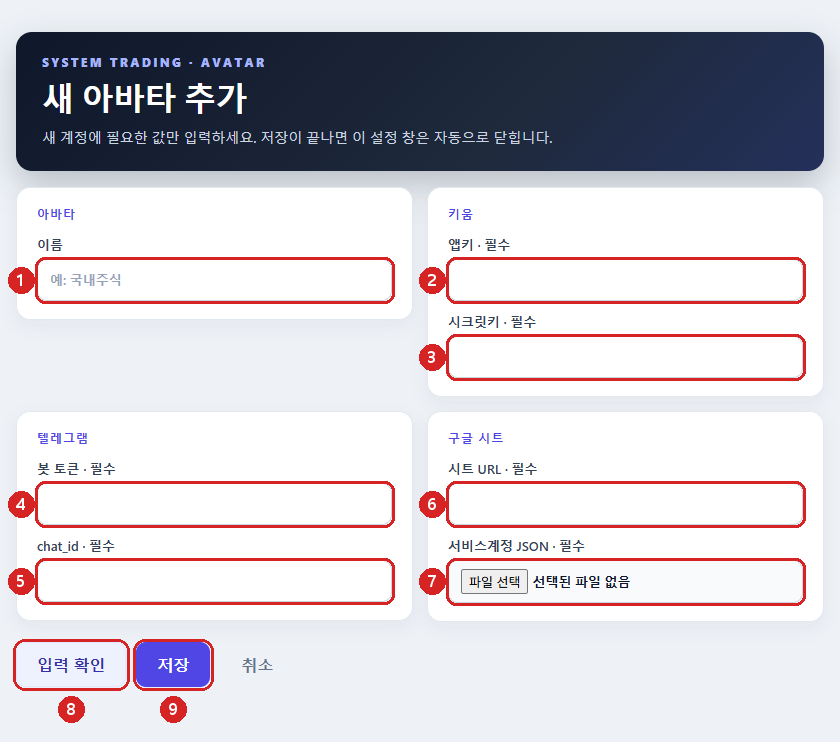
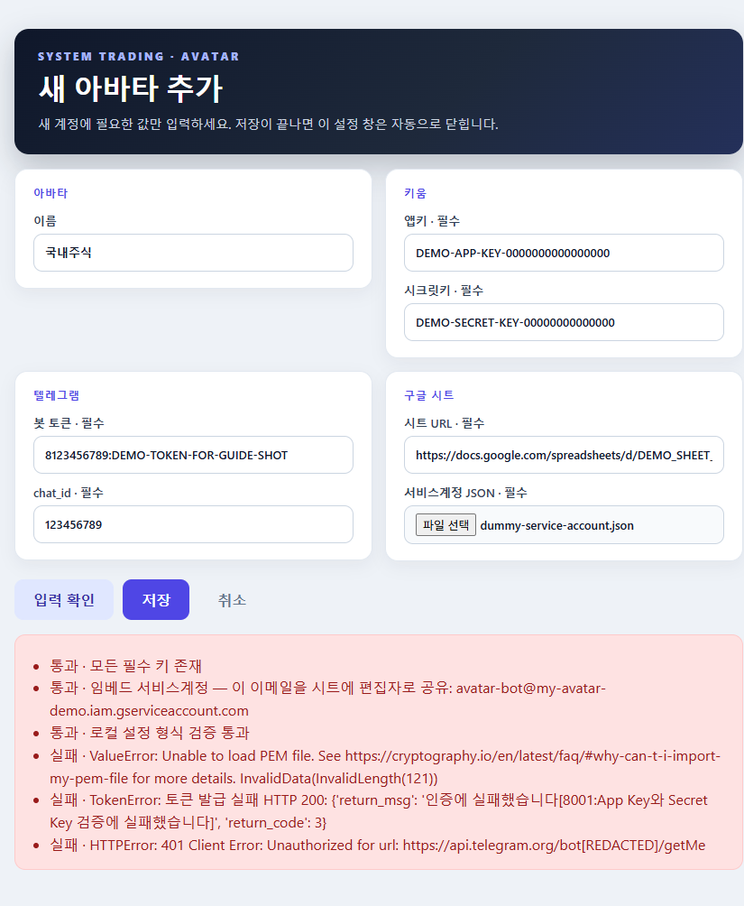

맨 위 최신 릴리즈의 Assets(첨부 파일) 목록에서 Avatar.exe 를 클릭해 내려받습니다. 브라우저가 막으면 [유지]/[계속] — 서명이 없는 배포 파일이라 나오는 경고입니다.
받은 파일을 원하는 폴더(예: C:\Avatar\)에 둡니다. 바탕화면 바로가기를 만들어 두면 편합니다.
3-2 처음 실행 — 화면에 무엇이 뜨는지
Avatar.exe 를 더블클릭합니다.
“Windows의 PC 보호”(SmartScreen) 파란 창이 뜨면 [추가 정보] → 그때 나타나는 [실행]. 보통 처음 한 번만 뜹니다.
검은 콘솔 창이 떠서 Avatar 준비 중... → Avatar 1.18.0 실행 이 지나갑니다. 첫 실행은 본체를 푸느라 수십 초 걸릴 수 있고, 끝나면 저절로 닫힙니다 — 닫히는 것이 정상입니다.
트레이에 아바타 아이콘이 생기고 잠시 뒤 풍선 알림이 한 번 뜹니다 — “아바타가 트레이에서 실행 중입니다…”.
아이콘이 안 보이면 ^(숨겨진 아이콘 표시) 안을 확인하고, 작업표시줄로 끌어다 놓아 꺼내 두세요. 아이콘 색과 툴팁이 곧 상태 표시입니다.
실행했는데 이런 게 뜬다면
뜻 · 할 일
검은 창이 떴다 닫히고 트레이 아이콘이 생김
정상입니다
Avatar 가 이미 실행 중입니다. 트레이 아이콘을 확인하세요.
이미 떠 있어 중복 실행이 막힌 것 — ^ 안까지 트레이를 확인하세요
검은 창은 닫혔는데 아이콘이 끝내 안 보임
백신 차단 가능성 — %LOCALAPPDATA%\Avatar\bootstrap.log 의 마지막 줄 확인 후 다시 실행
Avatar 앱을 준비하지 못했습니다…
디스크 공간·권한 문제 — 공간을 확보한 뒤 다시 실행
3-3 트레이 메뉴 한눈에 보기
아이콘을 우클릭하면 아래 메뉴가 나옵니다. ▸ 가 붙은 항목은 마우스를 올리면 하위 목록이 펼쳐집니다.
처음이라면 ④ “아바타 추가…” 하나만 쓰면 됩니다.
1아바타▸
2자동 시작▸
3정산(랩업)▸
4아바타 추가…← 계좌 등록은 여기서 시작
5이름 변경▸
6아바타 삭제…▸
7업데이트 확인
8종료
표시
메뉴
하는 일
1
아바타
등록한 계좌 목록. 이름을 클릭하면 시작, 실행 중인 계좌를 클릭하면 중지(실행 중이면 ✓)
2
자동 시작
트레이가 뜰 때 함께 시작할 계좌를 체크
3
정산(랩업)
지금 바로 당일 정산을 시트에 기록(미체결 취소 없음)
4
아바타 추가…
설정 마법사를 열어 계좌를 등록 — 아래 04
5
이름 변경
계좌 표시 이름 바꾸기(중지 상태 계좌만)
6
아바타 삭제…
계좌를 영구 삭제(중지 상태 계좌만)
7
업데이트 확인
새 버전을 즉시 확인 — [예/아니오] 창이 뜹니다
8
종료
트레이 종료. 실행 중인 계좌가 있으면 비활성 — 06
💡
계좌를 아직 하나도 등록하지 않았다면 ①②③⑤⑥ 의 하위 목록에는 “등록된 아바타 없음” 만 보입니다 — 고장이 아니라 정상입니다. ④ 로 계좌를 추가하면 목록에 나타납니다.
🔄
업데이트는 자동입니다. 트레이는 매일 프리장 시작 때 새 버전을 확인하고, 있으면 묻지 않고 바로 실행 중인 계좌를 정산·종료하고 업데이트한 뒤 자동으로 다시 시작합니다. 지금 바로 확인하려면 ⑦ 업데이트 확인을 누르세요 — 직접 누른 경우엔 [예/아니오] 창이 뜹니다.
04 아바타 추가 · 설정 마법사
준비한 값을 넣어 계좌를 등록
등록은 브라우저로 열리는 설정 페이지에서 합니다. 트레이 우클릭 → “아바타 추가…” 를 누르면
기본 브라우저에 새 탭이 열리고 “새 아바타 추가” 페이지가 뜹니다. 주소는 http://127.0.0.1:<임의 번호>/ —
내 컴퓨터 안에서만 열리는 임시 페이지라 입력값이 인터넷으로 나가지 않습니다.
💡
메뉴의 “아바타 추가…” 가 흐리게(비활성) 보이면 설정 페이지가 이미 열려 있다는 뜻입니다. 열어 둔 탭을 찾아 쓰거나, 그 탭에서 [취소] 를 누르면 곧바로 다시 열 수 있습니다(탭만 닫았다면 최대 31분 뒤 자동 정리). 탭이 아예 안 열리면 기본 브라우저가 지정돼 있는지 확인하세요.
4-1 화면 구성 — 어디에 무엇을 넣나

네 묶음(아바타 · 키움 · 텔레그램 · 구글 시트)으로 나뉩니다. · 필수 가 붙은 칸은 모두 채워야 합니다.
표시
칸
넣을 값
출처
1
이름아바타
트레이에 표시될 계좌 이름 (예: 국내주식) — 설정 폴더 이름도 이 값으로 만들어집니다
자유
2
앱키키움
키움 App Key
준비물 03
3
시크릿키키움
키움 Secret Key
준비물 03
4
봇 토큰텔레그램
8123456789:AAH… 형태 전체
준비물 04
5
chat_id텔레그램
숫자만 (예: 123456789)
준비물 04
6
시트 URL구글 시트
내 시트 사본 주소 전체
준비물 01
7
서비스계정 JSON구글 시트
[파일 선택] 을 눌러 받아 둔 JSON 파일을 지정
준비물 02
8
[입력 확인]
입력값을 실제로 검사합니다 (저장은 되지 않습니다)
—
9
[저장]
검사가 끝났으면 계좌를 등록합니다
—
💡
키·토큰은 붙여넣기를 눈으로 확인하라고 가리지 않고 평문으로 보입니다. 복사할 때 앞뒤 공백이나 줄바꿈이 섞이지 않게 하세요 — 가장 흔한 실패 원인입니다. ⑦ 의 JSON 은 설정 안으로 내용이 복사되어 저장되므로, 저장한 뒤에는 원본 파일을 옮기거나 지워도 됩니다.
4-2 [입력 확인] — 결과 읽는 법
[저장] 전에 반드시 [입력 확인]을 누르세요. 형식만 보는 것이 아니라
키움·텔레그램·구글 시트에 실제로 접속해 봅니다(몇 초 걸립니다). 결과는 화면 아래 상자에 줄마다 나옵니다.

일부러 가짜 값을 넣은 예 — 앞 세 줄은 통과, 뒤 세 줄이 접속 실패입니다.
값이 모두 맞으면 여섯 줄이 전부 “통과” 로 나옵니다.
통과 · 모든 필수 키 존재
통과 · 임베드 서비스계정 — 이 이메일을 시트에 편집자로 공유: avatar-bot@….iam.gserviceaccount.com
통과 · 로컬 설정 형식 검증 통과
통과 · 시트 연결 성공: 아바타 V3.8의 사본
통과 · 키움 토큰 발급 성공
통과 · 텔레그램 봇 확인: @내봇이름 → chat 123456789
🔎
두 번째 줄의 서비스계정 이메일이 준비물 02에서 시트에 공유해 둔 그 주소인지, 네 번째 줄의 시트 제목이 내 사본 제목인지 눈으로 확인하세요. 엉뚱한 시트에 연결된 것을 여기서 잡을 수 있습니다.
키움은 실행할 PC의 공인 IP가 등록돼 있어야 합니다(준비물 03). 여기서는 통과했는데 실행 후 조회가 계속 거부되면 IP 등록부터 확인하세요.
4-3 저장 — 그리고 등록 확인
[저장] 을 누릅니다.
아래에 “저장했습니다. 이 창을 닫아도 됩니다.” 가 뜨면 끝입니다 — 브라우저 탭은 직접 닫으세요(설정용 임시 서버는 이미 닫혔습니다).
트레이 우클릭 → “아바타” 에 마우스를 올려 방금 넣은 이름이 목록에 보이면 등록 성공입니다.
설정은 %APPDATA%\Avatar\<이름> 폴더(config.yaml)에, 계좌 목록은 %APPDATA%\Avatar\avatars.json 에 저장됩니다 — 업데이트해도 보존됩니다.
💡
저장하지 않고 그만두려면 [취소] — 아무것도 저장되지 않고 설정 페이지가 닫힙니다. 여러 계좌를 운용하려면 “아바타 추가…” 를 계좌 수만큼 반복하면 됩니다.
4-4 값을 잘못 넣었거나 나중에 바꾸고 싶다면
바꿀 것
방법
이름만
계좌를 중지한 뒤 트레이 우클릭 → “이름 변경” — 설정·기록·자동 시작 여부는 그대로 유지됩니다
키·시트 주소 등
마법사는 새로 추가하는 용도 전용입니다. ① 계좌를 중지하고 %APPDATA%\Avatar\<이름>\config.yaml 을 메모장으로 열어 APP_KEY·SECRET_KEY·TELEGRAM_TOKEN·TELEGRAM_CHATID·SPREADSHEET_URL 을 고쳐 저장(기록 보존 — 권장) 또는 ② 중지 → “아바타 삭제…” 후 다시 추가(그 계좌 기록도 함께 삭제)
05 아바타 실행
계좌를 클릭하면 매매가 시작됩니다
트레이 우클릭 → “아바타” 에 마우스를 올리면 등록된 계좌 목록이 나옵니다.
실행할 계좌 이름을 클릭 — 시작되면 메뉴에 체크 표시가 붙습니다.
정상 기동되면 텔레그램으로 시작 알림이 옵니다 — 먼저 “🚶 Avatar 출근하는 중…”(기동 시작), 시트 준비가 끝나면 “Avatar 출근했습니다”(매매 준비 완료) 순서로 두 번 옵니다.
장중이면 시트 설정대로 매매, 장 마감이면 접속만 하고 정산 후 대기합니다.
📈
실행 상태·체결 이벤트는 텔레그램으로 통지되고 구글 시트에도 기록됩니다. 프로그램 창을 계속 열어둘 필요가 없습니다.
상태 상태 한눈에 보기 — 트레이 아이콘에 마우스 올리기
트레이 아이콘 위에 마우스를 올리면 계좌별 현재 상태가 한 줄로 나옵니다 (예: Avatar — 국내주식 ● 장중(남 213분)·미체결 3·시트 40초 전 / 해외 ✓ 퇴근). 아이콘 상태는 셋뿐입니다 — 원색(불꽃이 선명) 정상, 색바램(반쯤 회색) 이상(아래 ! 항목이 하나라도 있음), 회색(불이 꺼짐) 전부 중지. 별도의 초록/노랑 점이 붙는 게 아니라 아이콘 자체의 선명도가 달라지는 방식이라, 이상 상태(색바램)는 언뜻 봐서는 구분이 어려울 수 있습니다 — 정확한 상태는 마우스를 올려 툴팁으로 확인하세요.
상태는 세 묶음으로 나뉩니다 — 실행 여부, 정상 단계(지금 뭘 하는 중인지), 이상(! — 확인이 필요한 상태). 실행 후 툴팁에 뜨는 표시를 아래에서 찾으면 지금 어떤 상황인지 스스로 알 수 있습니다.
① 실행 여부
표시
뜻
이렇게 하세요
○ 중지
실행하지 않음
트레이 → "아바타" 에서 계좌를 클릭해 시작
○ 재시작 대기
업데이트·이름 변경으로 잠시 종료됨
곧 자동으로 다시 시작됩니다 — 기다리면 됩니다
◐ 외부 실행
트레이 관리 밖에서 돌고 있음 — 트레이가 비정상 종료됐다가 다시 뜬 경우 살아남은 아바타가 대표적. 매매는 되고 있지만 트레이로 중지·시작이 불가능
작업 관리자에서 해당 avatar.exe 를 종료한 뒤 트레이에서 다시 시작 (⚠️ 강제 종료라 미체결 취소·정산 없이 끊깁니다 — 장외 시간에 정리 권장)
② 정상 단계 (실행 중 — 아이콘 원색)
표시
뜻
◔ 기동 중 / ◔ 시트 로딩
시작 직후 — 키움 접속·시트 첫 읽기 중. 보통 1~2분 안에 다음 단계로 넘어갑니다
● 프리장 / ● 장중(남 N분) / ● 애프터 / ● 주간장
매매 사이클 진행 중. ·미체결 n은 걸어둔 주문 수, ·시트 N초 전은 시트를 마지막으로 읽은 시각
● 실행
단계 정보가 없는 실행체(구버전 아바타 등) — 예전 방식 표시
◑ 장외 대기 / ◑ 휴장 대기
장이 닫혀 있어 다음 장까지 대기 (휴장일이면 휴장 대기)
◑ 대기(장중) 등
세션이 장중에 끝나 다음 사이클 재진입을 기다리는 중
◆ 퇴근 중
마감 절차 — 미체결 취소 중
◆ 랩업 중(n회차)
당일 정산을 시트에 기록 중 (수동 정산도 이 표시)
✓ 퇴근
오늘 정산까지 완료, 다음 장 대기
‖ 일시정지
텔레그램 /pause 또는 트레이 메뉴로 일시정지 — 매매하지 않음 (/resume 으로 재개)
◌ 정지 중
중지 명령을 받아 미체결을 취소하고 정리하는 중
③ 이상 (! — 아이콘 색바램)
표시
뜻
이렇게 하세요
! 시트 N분 지연
시트를 15분 넘게 못 읽음
인터넷·구글 시트 접속 확인 후 텔레그램 /reload
! 시트 갱신 없음
시트를 한 번도 못 읽음
시트 탭 구성(ITEM·종목 탭·RSI)·서비스계정 공유 확인. /reload 를 보내면 실패 원인이 응답으로 옵니다
! 시트 시각 미래(시계 확인)
기록된 시각이 미래 — PC 시계가 틀어졌을 가능성
Windows 설정에서 시간 자동 동기화
! 키움 조회 N분 지연
매매 중인데 키움 조회가 15분 넘게 없음 — 아바타 멈춤 의심
계좌를 중지 후 다시 시작
! 사이클 오류
직전 매매 사이클에서 오류
텔레그램 알림·log 폴더 확인, 반복되면 재시작
! 상태 조회 실패
트레이가 그 아바타의 상태 기록을 못 읽음
일시적이면 무시, 지속되면 계좌 재시작
자동 자동 시작 — 트레이가 뜰 때 계좌를 자동 실행
매번 계좌를 손으로 클릭하지 않아도 됩니다. 자동 시작으로 표시해 두면 트레이를 실행할 때 그 계좌가 함께 시작됩니다.
트레이 우클릭 → “자동 시작” 에 마우스를 올리면 계좌 목록이 나옵니다.
자동 시작할 계좌를 클릭해 체크합니다(다시 클릭하면 해제).
설정은 다음 트레이 실행부터 적용됩니다 — 트레이가 뜨면 체크된 계좌가 자동 실행되고 풍선 알림으로 알려줍니다.
💻
PC를 껐다 켜도 알아서 돌아옵니다. 설치할 때 트레이가 Windows 시작 프로그램에 등록되므로 재부팅·전원 차단 뒤 로그인하면 트레이가 자동으로 뜨고, 꺼지기 직전에 돌고 있던 계좌를 그대로 되살립니다(직접 중지해 둔 계좌는 되살리지 않습니다). 새벽에 Windows 업데이트가 PC를 재시작해도 그날 매매가 빠지지 않습니다. 자동 실행이 싫으면 Windows 설정 > 앱 > 시작 프로그램에서 끄면 됩니다.
수동 수동 매수·매도 — 아바타와 같은 계좌에서 직접 주문하기
아바타가 운용 중인 계좌에서 HTS/MTS 로 직접 주문해도 됩니다. 아바타는 자기가 낸 주문만 취소하고, 직접 낸 주문은 관리 종목이라도 건드리지 않습니다(감지하면 텔레그램으로 하루 1회 알려줍니다). 퇴근·계좌 중지·/cancelall 때도 수동 주문은 남습니다 — 지우려면 직접 취소하거나 /cancel <주문번호>를 쓰세요.
⚠️
한 가지 규칙: 수동 주문 가격을 아바타의 회차(가이드) 가격과 겹치지 않게 하세요. 같은 가격에 아바타 주문과 함께 걸리면 그 회차가 이중 체결될 수 있습니다(겹침이 감지되면 경고 알림이 옵니다). 수동 체결로 잔고·평단이 바뀌면 시트가 재계산하고 아바타가 자기 주문을 새 가격으로 다시 겁니다.
정산 수동 정산 — 지금 바로 시트에 정산 기록하기
당일 정산(랩업)은 장 마감 후 자동으로 돌지만, 원할 때 손으로도 돌릴 수 있습니다. 계좌 잔고·손익을 시트에 기록만 하며 미체결 주문은 취소하지 않습니다.
트레이 우클릭 → “정산(랩업)” 에 마우스를 올려 계좌를 클릭합니다.
확인창에서 [예] 를 누르면 최대 2분 안에 실행되고, 결과는 텔레그램으로 옵니다(✅ 수동 정산 완료).
거래 세션 중에는 쓸 수 없습니다 — 메뉴에 (거래 중)으로 비활성 표시되고, 중지 상태면 (중지)로 표시됩니다(계좌를 먼저 시작). 같은 조건이 텔레그램 /wrapup에도 적용됩니다.
이름 이름 변경 — 계좌 표시 이름 바꾸기
추가할 때 정한 이름은 나중에 바꿀 수 있습니다. 프로필 폴더도 새 이름으로 함께 바뀌며, 설정·데이터·자동 시작 여부는 그대로 유지됩니다.
바꿀 계좌를 먼저 중지합니다(실행 중인 계좌는 목록에 나오지 않습니다).
트레이 우클릭 → “이름 변경” 에 마우스를 올려 계좌를 클릭합니다.
브라우저에 작은 입력 창이 열립니다 — 새 이름을 입력하고 저장하면 끝입니다.
확인 텔레그램으로 실행 확인
아바타가 잘 돌고 있는지 텔레그램 명령어로 바로 확인할 수 있습니다. 준비물 1‑4에서 등록한 내 대화(chat_id)에서 명령을 보내면 봇이 답합니다 — 먼저 /status 를 보내보세요.
/status 응답 예시▶️ 실행 중 · 모드: ⚠️ 실전 · 마지막 사이클: 22:31:04 · 최근 결과: 정상
조회 · 확인 명령
명령어
설명
/status
실행/일시정지 상태 · 모드 · 마지막 사이클 + 접수 중인 주문 · 오늘 체결 요약 — 실행 확인의 핵심
/help
전체 명령 목록 보기
/balance
보유 잔고 (종목 · 수량 · 평단)
/deposit
주문가능금액(예수금)
/unfilled [심볼]
미체결 주문 목록 (심볼 생략 시 전체)
/orders [n]
최근 주문 원장 n건 (기본 10)
/quote <심볼>
현재가 조회
/reload
시트를 완전히 새로 읽기 (시트를 손으로 고친 뒤 즉시 반영)
/log [n]
최근 로그 n줄 (기본 30)
제어 · 주문 명령 — 실행 전 확인 버튼이 뜹니다
명령어
설명
/pause · /resume
매매 일시정지 / 재개
/buy · /sell <심볼> <수량> <가격> [유형]
수동 매수 / 매도 (확인 필요)
/cancel <주문번호> <심볼>
특정 주문 취소 (확인 필요)
/cancelall <심볼> <매수|매도>
한 종목의 방향 전체 취소 — 아바타가 낸 주문만(확인 필요)
/wrapup
수동 정산 — 잔고·손익을 시트에 즉시 기록, 미체결 취소 없음. 거래 세션 중에는 불가(확인 필요)
🔒
명령은 준비물 1‑4에서 등록한 chat_id(내 대화)에서만 동작합니다(화이트리스트). /buy·/cancel·/wrapup 같은 실행 계열은 누르면 확인 버튼이 한 번 더 떠서 실수를 막아줍니다.
06 아바타 종료
계좌 중지 → 앱 종료, 두 단계
앱은 실행 중인 계좌가 하나라도 있으면 종료되지 않도록 막혀 있습니다 — 주문을 남긴 채 꺼지는 것을 방지합니다.
6-1 계좌 중지 — 미체결 자동 취소 포함
트레이 우클릭 → “아바타” → 실행 중(체크된) 계좌 클릭.
확인창에서 예 를 누르면 중지가 시작됩니다.
Avatar 계좌 중지 확인계좌 아바타 ‘○○’ 를 중지합니다. 미체결 주문이 있으면 모두 취소한 뒤 중지합니다. 중지하시겠습니까?
진행 창이 아바타의 현재 단계(미체결 취소 중…, 랩업 중 등)를 실시간 표시하고, 정리가 끝나면 자동으로 닫힙니다.
6-2 트레이 종료
모든 계좌를 중지하면 트레이 “종료” 가 활성화됩니다. 실행 중이면 “종료 (실행 중 계좌 중지 필요)” 로 비활성입니다.
“종료” 클릭 → 확인창에서 예 → 트레이 앱이 종료되고 아이콘이 사라집니다.
Avatar 종료 확인Avatar 트레이를 종료합니다. 종료하시겠습니까?
⚠️
강제 종료·전원 차단 등 정상 절차가 아닌 종료에서는 미체결 자동 취소가 동작하지 않을 수 있습니다. 종료는 반드시 위 절차를 따르세요.
🗑️
더 이상 쓰지 않는 계좌는 중지한 뒤 트레이 우클릭 → “아바타 삭제…” 에서 지울 수 있습니다(확인창이 뜹니다). 실행 중인 계좌는 삭제 목록에 나타나지 않습니다.
＋ 부록 · 문제 해결
자주 겪는 문제
증상
확인 · 해결
트레이 아이콘이 안 보임
트레이의 ^(숨겨진 아이콘 표시)를 눌러 확인
실행 시 “PC 보호” 경고
SmartScreen → 추가 정보 → 실행
검은 창만 떴다 닫히고 아이콘이 없음
%LOCALAPPDATA%\Avatar\bootstrap.log 마지막 줄 확인(백신 차단이 흔함) 후 다시 실행
“Avatar 가 이미 실행 중입니다” 창
중복 실행이 막힌 것 — 트레이(^ 안 포함)를 확인
“아바타 추가…” 가 비활성
이전 설정 마법사가 아직 열려 있음. 브라우저 탭을 닫고 잠시 뒤 재시도(일정 시간 후 자동 정리)
설정 페이지 탭이 안 열림
기본 브라우저가 지정돼 있는지 확인 — 메뉴를 거듭 누르지 말고 03의 비활성 안내를 먼저 확인
저장했는데 “아바타” 목록에 없음
메뉴를 닫았다 다시 열어 보고, %APPDATA%\Avatar\avatars.json 에 이름이 있는지 확인